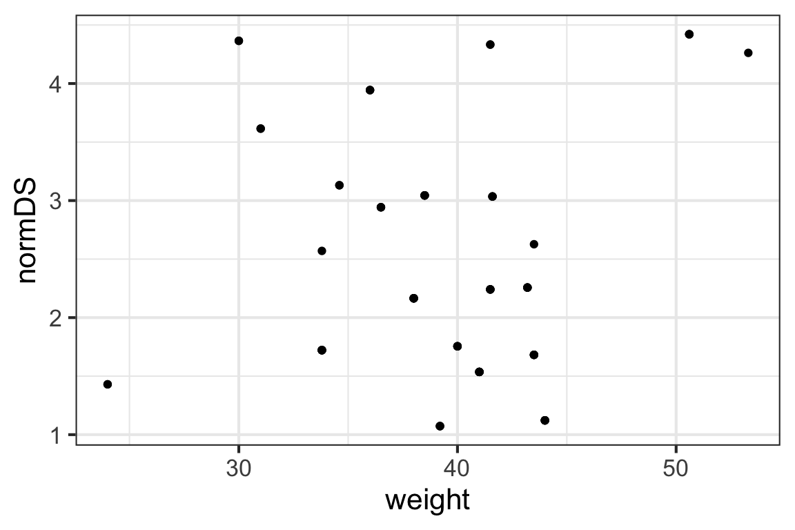
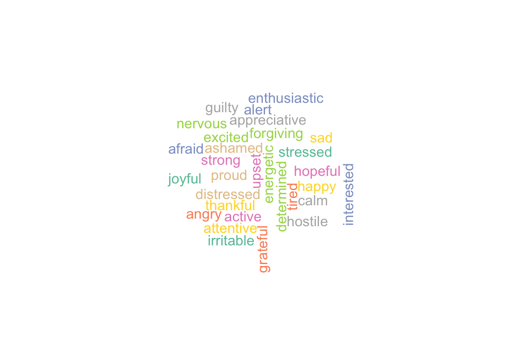
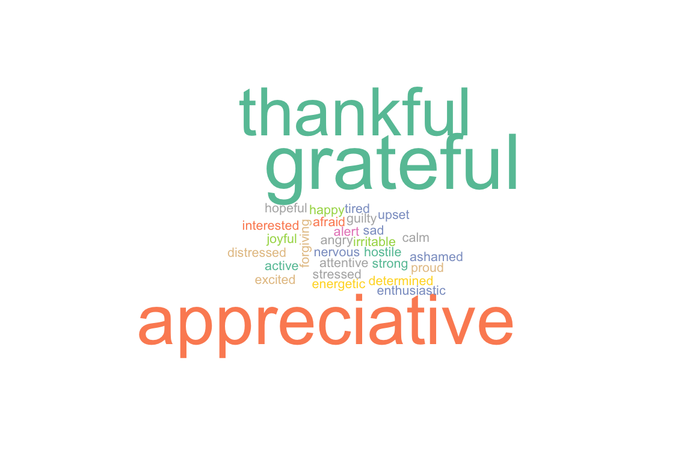
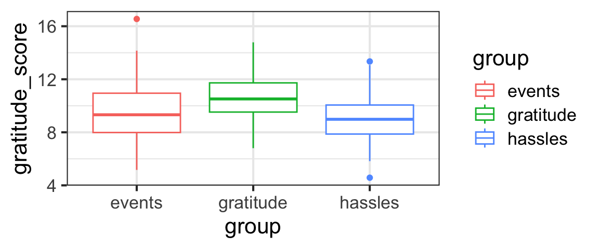
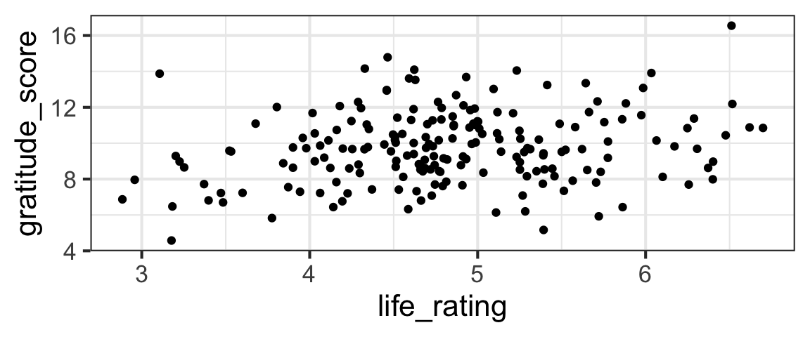
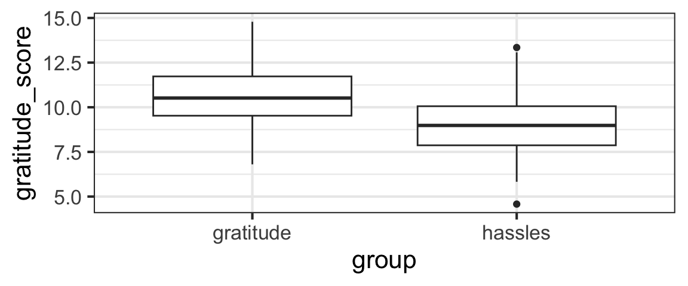
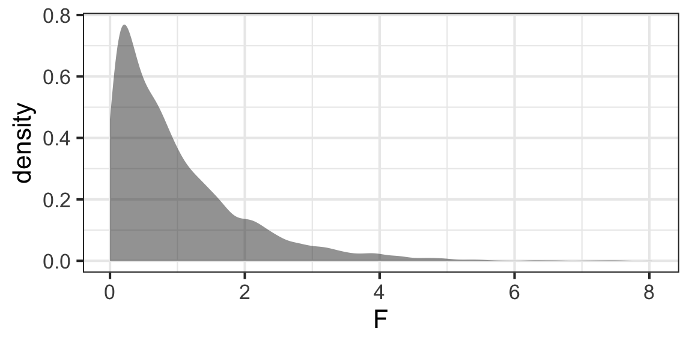

Interpretation and Inference for Regression Models
Section Learning Outcomes
Knowing how to plan and fit a model isn’t the end of the process (at all). What’s next? This section we’ve explored how to assess whether a model really is appropriate for a particular dataset, and thus reliable.
Remember that if a model doesn’t pass assessment - if any of the conditions go unmet - then the model can’t be trusted to provide reliable results at all.
But if a model does pass assessment, we can finally turn to model interpretation - what do the results mean, and how can we communicate the insights the model provides via words and visualizations?
Also part of this topic is something commonly called model selection. That term is a bit confusing given the approach taught in our course, as we won’t actually select certain variables to include/exclude from a model at this stage.
Rather, we are deciding whether and in what way each candidate predictor relates to the response variable. So for us, “model selection” is all about interpreting and understanding the model results, including using inferential statistics.
By the end of the section you will:
- Create and interpret prediction plots for multiple linear regression models
- Interpret confidence intervals for linear regression coefficients and in prediction plots
- Articulate how different modeling goals (prediction vs inference) influence how an analyst engages in the modeling process
- Interpret p-values or information criteria to do model selection for linear regression models
Text Reference
Recommended reading for the materials covered in this section can be found in:
- Beyond Multiple Linear Regression Chapter 1.6
- Regression Modeling Strategies Chapters 2.3, 4, and 5.1
- Course Notes Chapter 1.8-1.11 and Chapter 3
Prediction Plots
Once we have fitted a regression model and it passes assessment checks, how can we use it to draw conclusions?
One of the most useful tools we can have is a picture of what the model tells us about the relationships between our response and predictor(s).
How can we get one?
CIs and PIs
We have mentioned two different ways to conceptualize uncertainty in model predictions…
A confidence interval: We could find an interval that gives plausible values for “where the line is located”, taking into account uncertainty in the intercept and slope estimates. Another way of thinking about this is that it gives a plausible range of values for the expected value (mean) of the response variable for all hypothetical new observations with a certain predictor-variable value.
A prediction interval: We could find an interval that gives plausible values for “the point cloud” of possible new observations, taking into account uncertainty in the slope and intercept, plus the residual variance. Another way of thinking about this is that it gives a plausible range of values for the response for one new datapoint with a certain predictor-variable value. Note that we’ve coined the new name prediction interval to differentiate it from the other one, this is really also a CI (just for a very specific scenario).
Let’s hear that explained:
(You can also watch directly on YouTube if you prefer.
We will generally default to showing prediction plots with confidence intervals in this course…but it’s nice to know the difference in interpretation between CIs and PIs (and we’ll talk more about related matters in a later section on hierarchical models).
Prediction vs Inference
In this course we will focus on modeling for statistical inference, rather than for the purpose of making predictions for new scenarios based on our fitted model. Why? And why does the distinction matter? Before we dive into how to do inference, let’s discuss.
Inference, TL;DR
Ooh, Slow down…
Much of the rest of this section fills in a lot of details that were skimmed over in the very brief overview in that video. Focus first on understanding and applying what was in that video - the rest is elaboration.
Items that provide additional details and context but are note utterly required for practical applications are marked with (opt).
(opt) Inference
Our goal: establish a method to generate confidence intervals and carry out tests for linear models, especially \(\beta_0\) and \(\beta_i\), the intercept and slope(s). In fact, we focus almost entirely on the slopes, but the exact same methods work for the intercept too (it’s just that the slope is almost always of much more practical interest than the intercept).
We want to be able to test:
\[H_0: \beta_1 = 0\]
\[H_A: \beta_1 \neq 0\]
If the null hypothesis above is true, that means there is no linear association between the predictor and response variables – informally, it means the predictor is useless at predicting the response.
If we reject the null, that suggests there is a real association between the two variables (and the predictor is “worthwhile” statistically to help predict the response).
Before we carry out any tests, let’s establish an example model.
Example
We will use the bonobos dataset as an example. You may recall the dataset from earlier examples. Briefly, the dataset is from a 2019 paper by J.S. Martin and colleagues on bonobo face measurements. The authors worked with 117 bonobos in European zoos and recorded data including their Sex, Age in years, weight, and some measurements about their face:

Finally, they also measured each bonobo’s assertiveness score (AssR) and dominance score (normDS).
The dataset is at https://sldr.netlify.app/data/bonobo_faces.csv and so you could read the dataset in to R by running:
bonobos <- readr::read_csv('http://sldr.netlify.app/data/bonobo_faces.csv')Practice
We might wonder whether size (as measured by weight) is a good predictor of the dominance score, normDS. Graphically:
gf_point(normDS ~ weight, data = bonobos)
Fit the corresponding regression model in R and view its summary(). Note, the dataset bonobos is already read in for you here:
Fill in the blanks with the right formula, dataset name, and fitted model object name!
bonobo_lm <- lm(normDS ~ weight, data = bonobos)
summary(bonobo_lm)SE of Sampling Distributions
As you may have noticed, the summary() of an lm() (or glmmTMB()) regression model fit includes not only estimates of the parameters \(\beta_0\) and \(\beta_1\), but also the standard errors of the corresponding sampling distributions! (Hooray.) These measure the standard deviation we’d expect to see in our parameter estimates from sample to sample, if we were somehow able to collect data many many times. They can be used to calibrate our uncertainty in our estimates of the \(\beta\)s, and they are found in the coefficient table, labelled "Std. Error".
normDS_model <- lm(normDS ~ weight, data = bonobos)
summary(normDS_model)
Call:
lm(formula = normDS ~ weight, data = bonobos)
Residuals:
Min 1Q Median 3Q Max
-1.3794 -0.8138 -0.2354 0.6043 2.0207
Coefficients:
Estimate Std. Error t value Pr(>|t|)
(Intercept) 2.00774 0.92555 2.169 0.0337 *
weight 0.01122 0.02334 0.481 0.6322
---
Signif. codes: 0 '***' 0.001 '**' 0.01 '*' 0.05 '.' 0.1 ' ' 1
Residual standard error: 1.031 on 66 degrees of freedom
Multiple R-squared: 0.003491, Adjusted R-squared: -0.01161
F-statistic: 0.2312 on 1 and 66 DF, p-value: 0.6322CI for the slope
Although we won’t derive the reasons why in detail, the sampling distribution for the slope has a t distribution with \(n - 2\) degrees of freedom (where \(n\) is the number of rows in the dataset).
So, after all that, we could find a CI for a regression slope according to:
\[ \hat{\beta}_1 \pm t_*SE(\hat{\beta}_1)\] Where \(t_*\) is a critical value from a \(t(n-2)\) distribution, and SE(\(\hat{\beta}_1\)) is the standard error of the slope from the coefficient table in the model summary().
As an example, find a 95% CI for the slope of our bonobo regression model.
We can do this somewhat manually:
bm <- lm(normDS ~ weight, data= bonobos)
summary(bm)
Call:
lm(formula = normDS ~ weight, data = bonobos)
Residuals:
Min 1Q Median 3Q Max
-1.3794 -0.8138 -0.2354 0.6043 2.0207
Coefficients:
Estimate Std. Error t value Pr(>|t|)
(Intercept) 2.00774 0.92555 2.169 0.0337 *
weight 0.01122 0.02334 0.481 0.6322
---
Signif. codes: 0 '***' 0.001 '**' 0.01 '*' 0.05 '.' 0.1 ' ' 1
Residual standard error: 1.031 on 66 degrees of freedom
Multiple R-squared: 0.003491, Adjusted R-squared: -0.01161
F-statistic: 0.2312 on 1 and 66 DF, p-value: 0.6322CI95 <- -0.14278 + c(-1,1) *
qt(0.975, df = nrow(bonobos) - 2) * 0.06668
CI95[1] -0.275910915 -0.009649085Or… we will generally take advantage of the fact that there’s a function for that:
Notice the shortcut – the R function confint() returns CIs (with a default confidence level of 95%).
We can also omit specifying which predictor(s) we want CIs for and confint() will return them all…
Test for a slope
We can also test the null hypothesis \(H_0: \beta_1 = \beta_{1\text{null}}\) (where \(\beta_{1\text{null}}\) is some hypothetical slope value of interest) using the standardized test statistic
\[ t = \frac{\hat{\beta}_1 - \beta_{1\text{null}}}{SE(\hat{\beta}_1)}\]
The most common value for \(\beta_{1\text{null}}\) is \(0\), because if \(\beta_1 = 0\) that means that there is no relationship between the predictor and response and the predictor is useless as a predictor. If we can reject that null hypothesis, we can conclude that the predictor does have some utility.
To practice, you could carry out a two-sided test of \(H_0: \beta_1 = 0\) for the bonobo regression as shown in the hints below (if you learned R in your intro stat course and remember your intro stat pretty well).
normDS_model <- lm(normDS ~ weight, data= bonobos)
summary(normDS_model)
t_stat <- (-0.14278 - 0) / (0.06668)
p_val <- 2 * pt(t_stat, df = nrow(bonobos) - 2, lower.tail = TRUE)
p_valORRRR…A shortcut (which we will normally take!): Notice that this p-value is already in the model summary (in the last column of the coefficient table, labelled “Pr(\(>\vert\)t\(\vert\))”).
#shortcut: just use model summary
normDS_model <- lm(normDS ~ weight, data= bonobos)
summary(normDS_model)
Call:
lm(formula = normDS ~ weight, data = bonobos)
Residuals:
Min 1Q Median 3Q Max
-1.3794 -0.8138 -0.2354 0.6043 2.0207
Coefficients:
Estimate Std. Error t value Pr(>|t|)
(Intercept) 2.00774 0.92555 2.169 0.0337 *
weight 0.01122 0.02334 0.481 0.6322
---
Signif. codes: 0 '***' 0.001 '**' 0.01 '*' 0.05 '.' 0.1 ' ' 1
Residual standard error: 1.031 on 66 degrees of freedom
Multiple R-squared: 0.003491, Adjusted R-squared: -0.01161
F-statistic: 0.2312 on 1 and 66 DF, p-value: 0.6322ANOVA??
Note that for simple linear regression, the p-value reported at the very end of the model summary is the same as the one for the slope in the coefficient table.
This is only the case when there’s only one, quantitative predictor, since the test at the bottom is testing \(H_0: \text{all the slopes in the model are 0 for all predictors}\). But…it’s reported along with an F-statistic – which reminds us of the one-way ANOVA you may have encountered in a previous stats course – why is this??
Case Study: Gratitude
A growing body of research has documented the effects that practicing gratitude can have on people – providing not just spiritual and mental-health benefits, but even improving physical health.
Dataset
We will dive further into this topic – learning about ANOVA and some other tests along the way – via a case study where researchers tried to collect data to answer:
“How does gratitude affect peoples’ mental and physical well-being?”
The data are simulated based on the results of a paper published in 2003:

Click on the image above to get the full PDF. Reading it is not required, but it is interesting and accessible - check it out if you have time!
Can We Induce Gratitude?
To understand whether gratitude can cause improvements in mental and physical health and practices, the researchers needed to do a randomized study, in which they somehow controlled peoples’ gratitude levels. How did they do that?
First, they recruited nearly 200 college students to participate in their study.
They asked participants to complete a weekly journal, writing lists of things that they were grateful for. 1/3 of study participants were randomly assigned to this group - the gratitude group.
Other participants were asked to write about things that annoyed them instead – this was the hassles group.
Finally, a control group – the events group – just wrote about events in the past week that had affected them (could be either positive or negative).
Before delving into any other questions, the researchers had to verify that the gratitude group actually felt more grateful than the other groups…
More Design Details
In addition to the journals, all the students had to complete weekly surveys about their behavior and state of mind.
For example, they had to state how often (on a scale of 1 to 5) they experienced each of a set of feelings over the preceding week:

Pulling out Gratitude
The researchers combined scores from the words thankful, appreciative, and grateful to assess participants’ gratitude. In our dataset, this value is called gratitude_score.

The Data
How do the data actually look?

It seems like perhaps the gratitude_score is higher for the gratitude group and lower for the others, but we really need hypothesis test results to have more confidence in our judgment of whether the difference is real or if the differences between groups could just be the result of random sampling variation.
Our Questions
As Emmons and McCullough did, our first job will be to test whether the mean gratitude_score is the same for the different groups in the study – the gratitude group, the hassles group, and the events group.
First, we will consider a simplified case with only two groups: the gratitude and hassles groups.
But, considering the full dataset, we have more than two groups to compare. We also have other potential quantitative predictors we could include in our models. This will allow us to look at a few other tests (to figure out whether it is worthwhile to include a multi-level categorical predictor, or even a quantitative one; or to compare pairs of models consisting of a larger model and a smaller one that is a submodel of the larger one).
(opt) Comparing 2 Means: lm() Way
We have previously seen that we can use slope estimates from lm() and their standard errors with t-distributions to compute CIs or carry out hypothesis tests about the slope (often, testing \(H_0: \beta_1 = 0\)).
Review: Quantitative Predictors
For example, we could consider a model to predict gratitude_score as a function of life_rating (a score measuring positivity about one’s life as a whole).

life_model <- lm(gratitude_score ~ life_rating,
data = grateful)
summary(life_model)
Call:
lm(formula = gratitude_score ~ life_rating, data = grateful)
Residuals:
Min 1Q Median 3Q Max
-4.891 -1.466 -0.098 1.219 5.899
Coefficients:
Estimate Std. Error t value Pr(>|t|)
(Intercept) 7.2008 0.8828 8.157 4.22e-14 ***
life_rating 0.5295 0.1806 2.932 0.00377 **
---
Signif. codes: 0 '***' 0.001 '**' 0.01 '*' 0.05 '.' 0.1 ' ' 1
Residual standard error: 1.98 on 194 degrees of freedom
Multiple R-squared: 0.04243, Adjusted R-squared: 0.03749
F-statistic: 8.596 on 1 and 194 DF, p-value: 0.003775Review: CI for Slope
Find a 95% confidence interval for the slope coefficient of the life_model.
life_model <- lm(gratitude_score ~ life_rating,
data = grateful)
confint(life_model)Review: Test for Slope
Categorical?
If we consider a categorical variable with only two categories, everything is exactly the same (except the interpretation of the slope coefficient, which now gives the difference in means between the two categories).
For example, we can reduce the dataset to exclude the third events group, and then model gratitude_score as a function of group to see if the gratitude and hassles groups have different average gratitude scores.
Of course we would never normally do this! But right now, for learning purposes, we could use a categorical variable with 2 categories…and ours has three. So don’t try this filtering/subsetting at home!
grateful2 <- grateful |>
filter(group != 'events') |>
mutate(group = factor(group))
gf_boxplot(gratitude_score ~ group, data = grateful2)
Practice
Fit the model and, just as in the previous example, find a 95% CI for \(\beta_1\) and test \(H_0: \beta_1 = 0\).
two_group_model <- lm(gratitude_score ~ group,
data = grateful2)
summary(two_group_model)
# if you wanted to pull out just the p-value (advanced move)
coefficients(summary(two_group_model))['grouphassles', 'Pr(>|t|)']Easy peasy! As we mentioned before, the only real difference between this model and the one with a quantitative predictor is that we end up with an indicator variable instead of one with many different numeric values, so the interpretation of the slope coefficient \(\beta_1\) is different.
But what if we have a categorical predictor with MORE THAN TWO categories? We need a test that incorporates differences between all the categories at once, so the tools we have so far aren’t enough.
Hypotheses for ANOVA
We want to test:
\[H_0: \mu_{gratitude} = \mu_{events} = \mu_{hassles}\]
In other words, our null hypothesis is that the means of all groups are the same. (The \(\mu\)s are the true population means for each of the groups.)
The alternate hypothesis is that at least one pair of groups has different means.
How do we translate this set-up into a linear regression model? We’re considering the model in which we predict gratitude_score with group:
grat_by_group <- lm(gratitude_score ~ group, data = grateful)
summary(grat_by_group)
Call:
lm(formula = gratitude_score ~ group, data = grateful)
Residuals:
Min 1Q Median 3Q Max
-4.527 -1.208 -0.128 1.160 7.016
Coefficients:
Estimate Std. Error t value Pr(>|t|)
(Intercept) 9.5317 0.2383 40.006 < 2e-16 ***
groupgratitude 1.1096 0.3369 3.293 0.00118 **
grouphassles -0.4280 0.3357 -1.275 0.20382
---
Signif. codes: 0 '***' 0.001 '**' 0.01 '*' 0.05 '.' 0.1 ' ' 1
Residual standard error: 1.921 on 193 degrees of freedom
Multiple R-squared: 0.1036, Adjusted R-squared: 0.0943
F-statistic: 11.15 on 2 and 193 DF, p-value: 2.612e-05There are a few equivalent ways of setting this up (depending on which group is included in the intercept), but in R the code above will yield a model like:
\[ y_i = \beta_0 + \beta_1 x_1 + \beta_2 x_2 + \epsilon\]
where \(x_1\) and \(x_2\) are indicator variables for the gratitude and hassles groups:
\[ x_1 = \begin{cases} 1 \text{, if group is gratitude}\\ 0 \text{, otherwise} \end{cases}\]
\[ x_2 = \begin{cases} 1 \text{, if group is hassles}\\ 0 \text{, otherwise} \end{cases}\]
In this framework, \(\beta_0\) is the mean for the events group. \(\beta_1\) and \(\beta_2\) are the differences in means between groups (gratitude and events, and hassles and events). So our intention with this ANOVA is to test \(H_0: \beta_1 = \beta_2 = 0\). If this is true, then the intercept \(\beta_0\) will be the overall mean gratitude_score.
Test Stat for ANOVA: F-ratio
The big challenge here is to come up with a test statistic – one number that measures evidence against the null hypothesis that all the group means are the same.
How can we define a good test statistic to measure how different more than two numbers are?
The video below will walk through the derivation of the F-ratio statistic.
Part 1: What we need to measure
Note: in this video, \(x\) is used for the variable whose mean is being estimated; for us it would make more sense to use \(y\) but I’m trusting you to make the translation…
(You can also watch directly on YouTube if you prefer.)
Part 2: How we measure it
Note: again in this video, \(x\) is used for the variable whose mean is being estimated; for us it would make more sense to use \(y\) but I’m trusting you to make the translation…
(You can also watch directly on YouTube if you prefer.)
Sampling Distribution of F, Simulated
All right, we can compute the F-ratio now. And we know that the bigger it is, the stronger the evidence we have against the idea that the categorical predictor is not associated with the response.
But…how big will it be, even if there is no association?
If H0 is true, then SSG will be ‘close to 0’ because the group means will be very close to the overall mean. So, MSG and the whole F-ratio will also be near 0 - but since it MSG is not exactly zero, it matters a lot what the corresponding value of MSE is…
F will be close to 1 if the null is true and the sample sizes in the groups are equal. MSE and MSG will BOTH depend on the overall variance of the data. In terms of intuition about the F ratio, though, it can be more useful to think about what happens to MSG when H0 is true (it gets smaller, and so so does F…). Bigger F is more evidence against H0.
If H0 is very wrong, then SSG will be relatively large because the group means will be quite different from the overall mean. And SSE will be relatively small, if there is little within-group variation. So the ratio will be (big / small) = VERY BIG, providing strong evidence against the null hypothesis and allowing us to conclude that the group means are NOT the same.
Again, we know that a large value of F will let us reject the null. But how big is “large”?
We need to know the sampling distribution of F (when \(H_0\) is true) in order to judge.
One way to get some understanding is to consider a simulation tailored to the case study we’re currently investigating. (You don’t need to be able to do this…just follow along.)
Plan of Attack for Simulation
- We will simulate dataset with \(n =\) 196 and three groups
- In our simulations, \(H_0\) is true, so all the groups actually have the same mean (let’s make it 10).
- We’ll draw simulated data points from a \(N(10,2)\) distribution
- We will allocate them randomly to the three groups
- For each simulated sample, we will compute \(F\)
- When we have many values of \(F\) for many simulated datasets, we can plot the sampling distribution of \(F\) under the null hypothesis and see what it looks like.
Simulation Code/Results
If you are interested in details of how the simulation is coded, you’re welcome to check it out (but it’s hidden because you will not be asked to re-create something like this yourself).
Show code
n_sim <- 5000
n <- nrow(grateful)
F <- numeric(length = n_sim)
for(i in c(1:n_sim)){
sim_data <- data.frame(gratitude_score =
rnorm(n, mean = 10, sd = 2),
group = grateful$group)
group_means <- mean(~gratitude_score | group,
data = sim_data)
sim_data <- sim_data |>
mutate(overall_mean = mean(~gratitude_score,
data = sim_data),
group_mean = group_means[group])
F[i] <- sum(~ ((group_mean - overall_mean)^2),
data = sim_data) / (3 - 1) /
( sum(~ (gratitude_score - group_mean)^2,
data = sim_data) / (nrow(sim_data) - 3) )
}
gf_density(~F)
Sampling Distribution of F, Analytically
- It looks how we expected – bounded by 0 on the left, and right skewed.
- But…what PDF looks like that???
- It turns out that this is a well-known probability distribution, the F distribution. This means we could (and R definitely can) compute probabilities (aka p-values) based on it…
You don’t need to be able to do this either, but a little graphical evidence that the simulated values match a theoretical F distribution pretty well: this is a density plot of the simulation results with the F distribution overlaid.
gf_density(~F) |>
gf_dist(dist = 'f',
params = c(df1 = 2, df2 = (nrow(grateful) - 3))) 
You may notice there’s a little mismatch between the simulated sampling distribution and the theoretical F distribution for very small F-values, but…where it counts, in the right tail, the match is very good. So our p-value estimates should be pretty good using this distribution (and for the record, you won’t see this issue so much with \(K > 3\)…)
P-value!
To get the p-value of our test, we just need to find the probability of getting an \(F\) stat at least as big as ours, in a \(F_{2, 193}\) distribution:
pf(11.15, df1 = 2, df2 = 193, lower.tail = FALSE)[1] 2.61536e-05This is very small, so we reject \(H_0\): at least one of the pairs of groups in the study had different gratitude_scores.
Letting R do all the work
Of course, we won’t do all the calculations by hand each time; there’s an R function to automate it all.
Anova Table (Type II tests)
Response: gratitude_score
Sum Sq Df F value Pr(>F)
group 82.30 2 11.152 2.612e-05 ***
Residuals 712.15 193
---
Signif. codes: 0 '***' 0.001 '**' 0.01 '*' 0.05 '.' 0.1 ' ' 1But notice – all the quantities that we used in our derivation of the F-statistic are right there in the ANOVA output table! (The numeric values also all match with the ones we’ve previously computed by hand.)
- The “group” row gives the SSG and its df (and the F stat and p-value)
- The “Residuals” row gives the SSE and its df. (Residuals is another statistical term for errors.)
- The “Sum Sq” column corresponds to “SS” terms (“MS” terms are not in the table, but can be computed from SSX and df from the table)
- The “F value” is the F-ratio (test statistic)
- The “Pr(>F)” is the p-value of the test
(A classic intro-stat textbook ANOVA problem is to give you a partially-filled-in ANOVA results table, and ask you to fill in the missing values.)
Devotion Break
Colossians 3:12-17 reminds us:
Therefore, as God’s chosen people, holy and dearly loved, clothe yourselves with compassion, kindness, humility, gentleness and patience. Bear with each other and forgive one another if any of you has a grievance against someone. Forgive as the Lord forgave you. And over all these virtues put on love, which binds them all together in perfect unity.
Let the peace of Christ rule in your hearts, since as members of one body you were called to peace. And be thankful. Let the message of Christ dwell among you richly as you teach and admonish one another with all wisdom through psalms, hymns, and songs from the Spirit, singing to God with gratitude in your hearts. And whatever you do, whether in word or deed, do it all in the name of the Lord Jesus, giving thanks to God the Father through him.
We do know that God expects our gratitude of us. The Heidelberg catechism is pretty clear on this requirement too (from Lord’s Day 45):
116. Why is prayer necessary for Christians?
Because it is the chief part of thankfulness which God requires of us (Psalm 50:14-15), and because God will give His grace and Holy Spirit only to those who earnestly and without ceasing ask them of Him, and render thanks unto Him for them (Matthew 7:7–8; Luke 11:9–10, 13; Matthew 13:12; Ephesians 6:18).
But this can all begin to feel burdensome, being told repeatedly that we should be thankful. It seems so unlikely to be fruitful. Being forced to be grateful – what possible good could that do?
Of course, we can consider that question theologically and get profound answers.
But data tells us too. What happened to the students in the study? Someone forced them to be grateful. And actually, it did them a kind of startling amount of good. How wonderful, that what is required of us is so good for us.
ANOVA for Multiple Regression
We can also use ANOVA for multiple linear regression models (with several predictors, perhaps a mix of categorical and quantitative ones); now, there is a variety of hypotheses we might want to test.
Most often, we want to test whether a larger model (with a certain predictor of interest in) is preferable to the smaller one without it.
Practical Examples of ANOVA for Regression
Removing Parameter(s)
To carry out ANOVA to determine whether to remove/retain parameters in a multi-predictor regression, we can use car::Anova().
This function carries out so-called “Type II” ANOVA tests. A p-value will be reported for each parameter in the model, testing the null hypothesis that that parameter is 0. In other words, it compares a larger model (with a certain predictor of interest in) is preferable to the smaller one without it.
Anova(lm(gratitude_score ~ life_rating + group, data = grateful))Anova Table (Type II tests)
Response: gratitude_score
Sum Sq Df F value Pr(>F)
life_rating 21.83 1 6.0722 0.01461 *
group 70.42 2 9.7933 8.913e-05 ***
Residuals 690.32 192
---
Signif. codes: 0 '***' 0.001 '**' 0.01 '*' 0.05 '.' 0.1 ' ' 1Based on this we can conclude that adding life_rating to a model with intercept and group is worthwhile (p-value 0.015); that is, we have moderate evidence there really is an association between life_rating and gratitude_score. And adding group to a model with intercept and life_rating is also worthwhile (p-value 0.000089) (this time we have very, very strong evidence of an association).
R Note: Anova(), not anova()!
Be careful not to use anova() to carry out tests related to removing parameters from a regression model.
anova() does “sequential” tests; for example, if you fit a model y ~ pred1 + pred2 + pred3, for pred1 anova() will compare the intercept-only model to the one with pred1 in it, but for pred2 it will compare the model with pred1 and pred2 in it to the one with only pred2, and for pred3 it will compare the model with all three predictors to the one without pred3. ACK!
In other words, with anova(), the order in which predictors are listed greatly affects the hypotheses tested, and the test results. THIS IS (ALMOST ALWAYS) NONSENSE. You want Anova() which is in the package car.
Model Comparisons
In other cases, if we want to compare two particular models with the same response variable but different predictors, we can just fit them both and then compare them with the syntax below.
anova(model1, model2)(Yes, little-a anova() is what you want this time.)
Why might we want to do this? Maybe, for example, you have two different predictors that measure a similar quantity in different ways and you want to know which one works better as a predictor?
This anova(model1, model2) approach also works for any of the above cases (removing parameters), if you manually fit the two models.
Another angle: \(R^2\)
This isn’t officially model selection, but there’s another common measure of how well a model fits a dataset that we haven’t talked about yet.
This metric doesn’t generalize especially well beyond linear models, so we won’t use it in too many later course sections, but it is very commonly used out there in the world so we should recognize and be able to interpret it.
So here we go! Let’s talk about \(R^2\), which measures the proportion variance explained by a model.
One way of measuring how closely a model fits a dataset is to try to measure how big the residuals are: how close do model predictions get to the dataset?
One statistic you may have encountered in the past to try to quantify this difference is the correlation coefficient, \(r\).
\[ r = \frac{1}{(n-1)} \sum_{i=1}^n \bigg{(} \frac{(x_i - \bar{x})}{s_x} \cdot \frac{(y_i - \bar{y})}{s_y} \bigg{)}\]
The above mathematical expression is pretty opaque to many, but the idea that \(r\) closer to 0 means nearly no association between \(x\) and \(y\), and closer to 1 (or -1) corresponds to data that will plot in nearly a straight line. If you want some practice, check out https://www.guessthecorrelation.com/.
With some algebra, it is possible to demonstrate that the square of this correlation coefficient, \(r^2\), is:
\[ r^2 = \frac{SSM}{(SSM + SSE)} = \frac{SSM}{SST}\]
Where \(SSM\) is the sum of squares for the model (variation explained by the model); \(SSE\) is the residual sum of squares (variation not explained by the model); and \(SST\) is the total variation of the response. (Note that some authors and software use \(R^2\) and some \(r^2\) but it’s the same quantity in both cases.)
In other words, \(r^2\) gives the proportion of the total variance in the response that is explained by a model.
The rationale above is explained for the case of one quantitative predictor and a quantitative response, but it generalizes directly to multiple predictors that are either categorical or quantitative.
Bigger is Better
Clearly, larger values of \(r^2\) (closer to the upper bound of 1) indicate a closer match between the data and a model.
And the \(r^2\) values are, pleasantly, on an absolute rather than a relative scale; so it would seem that we can compare them across models and datasets to get a sense of how “good” a model is.
Unfortunately, it’s not that simple. Basically, it’s because explaining a set proportion of the response variance is harder in some scenarios than others.
Measuring some physical quantity in a controlled physics lab experiment? If your \(r^2\) isn’t huge, it means you messed up. Measuring a score indicating subjective happiness in people? An \(r^2\) of 0.1 might be a cause to rejoice.
I recommend reporting and thinking about \(r^2\) values strictly in terms of the proportion of variance explained, rather than using them to decide a model is “good” or “bad” based on some universal \(r^2\) threshold value.
Adjusted \(r^2\)
When predictors are added to a regression model, its residuals can either get smaller, or stay the same. They won’t get larger.
Therefore, adding more predictors to a regression (even if they aren’t particularly good ones) tends to increase \(r^2\) by a small amount.
This makes \(r^2\) a dubious candidate for model comparison – it’s clearly biased to select models with more predictors as “better” (higher \(r^2\)).
One option is to adjust the formula for computing \(r^2\) to correct for this phenomenon.
Recall, we said that \(r^2 = \frac{SSM}{SST}\), with \(SST = SSM + SSE\). So we can rearrange:
\[ r^2 = \frac{SSM}{(SSM + SSE)} = \frac{SST - SSE}{SST} = 1 - \frac{SSE}{SST} = 1 - \frac{SSE/n}{SST/n}\]
In the last expression, if we substitute the appropriate degrees of freedom \((n - k - 1)\) (on the top) and \((n - 1)\) (on the bottom), we get the “adjusted” \(r^2\),
\[r^2_{adj} = 1 - \frac{SSE/(n - k - 1)}{SST/(n - 1)} = 1 - \frac{MSE}{MST}\]
This value is a little bit less straightforward to interpret than the original, but does have the desirable property of not automatically growing larger when more predictors are added to a model.
Specifically, \(r^2_{adj}\) will increase if a predictor is added to a linear regression model, and it improves the fit more than the expected improvement obtained by adding a random predictor that is independent of the response variable.
Computing \(r^2\) values
R’s model summary() returns both the “regular” and adjusted \(r^2\) values, labelled Multiple R-squared and Adjusted R-squared on the second-to-last line of the summary() output.
- Try adding one or more variables from the
gratefuldataset to a model predictinggratitude_scoreas a function ofgroup. - How do \(r^2\) and adjusted \(r^2\) change…
- If you add a predictor that is “good” according to ANOVA?
- If you add one that is not “good” according to ANOVA?
summary(lm(gratitude_score ~ group, data = grateful))
# add a good predictor: both r^2 go up
summary(lm(gratitude_score ~ group + life_rating, data = grateful))
# add a bad predictor: only un-adjusted r^2 goes up
summary(lm(gratitude_score ~ group + life_rating + exercise_hours, data = grateful))Using \(r^2\)
We could envision using \(r^2\) as a criterion for model selection, preferring models with higher values.
In practice, this is seldom done; instead, other criteria are preferred (often p-values, information criteria (defined next), or predictive performance). Then, the \(r^2\) (probably adjusted) value is reported as an additional piece of information quantifying the model’s goodness-of-fit.
So, if we don’t use \(r^2\) to choose the best from a set of models, what do we use?
(opt) Information Entropy

In an an incredibly influential 1948 paper, Claude Shannon laid out the foundations of Information Theory, a mathematical way of thinking about information and communication, signal and noise.
The totally optional video below gives a 7-minute crash course on Shannon’s concept of Information Entropy:
Akaike’s Information Criterion
Information theory has influenced many fields, including statistics. In 1974, Japanese statistician Hirotugu Akaike

used information theory to derive a new criterion, now known as Akaike’s Information Criterion (AIC), to allow comparison of a set of statistical models fitted to a dataset.
The basic idea is to quantify information loss. Imagine that data is generated by process \(f\). We propose several models (\(g_1\), \(g_2\), \(g_3\)) to represent the data-generating process \(f\). AIC measures the relative amount of information lost by approximating \(f\) with \(g_1\) or \(g_2\) or \(g_3\) (etc.). AIC provides a relative measure of information loss, not an absolute one (since \(f\) is not known); but a smaller AIC corresponds to less information loss by a given model.
Akaike’s paper (linked above) should be accessible to you if you are interested in the details, although you won’t be held responsible for its content.
Pause for Reflection
If you have time, check out Hirotugu Akaike’s musings in 2006, on the occasion of receiving the 2006 Kyoto Prize in Basic Sciences.
AIC Definition
AIC is defined as:
\[ \text{AIC} = 2k - 2(\hat{\ell})\]
Where \(k\) is the size of the model (number of parameters being estimated), and \(\hat{\ell}\) is the maximum value of the (base \(e\)) log-likelihood fuction.
- The first term, \(2k\), inflates the AIC value, causing larger models to have worse AIC values. This is often thought of as a “penalty” on model size.
- The second term, \(-2\hat{\ell}\), means that (better-fitting) models with higher log-likelihoods have better AIC values.
The direct connection between this and Shannon’s information theory is subtle, and is left to the exploration of the curious student who wants to read both of their papers…
This definition of AIC can be used for any statistical model fitted via maximum-likelihood estimation - a class of models much larger than just regression models, of course!
R functions AIC() and extractAIC() compute the AIC for fitted lm() models. (Note that they don’t agree on absolute AIC scores, since they include/exclude different constants in their calculations; but as long as you use the same R function on all models you wish to compare, it’s fine, since AIC is only a relative value anyway.)
AIC Practice
We can use AIC to choose the “best” of a pair (or a larger group) of models.
For example, last week we used ANOVA to decide whether group (“gratitude”, “hassles”, and “events”) is a good predictor of gratitude score:
Anova Table (Type II tests)
Response: gratitude_score
Sum Sq Df F value Pr(>F)
group 82.30 2 11.152 2.612e-05 ***
Residuals 712.15 193
---
Signif. codes: 0 '***' 0.001 '**' 0.01 '*' 0.05 '.' 0.1 ' ' 1We can make the same comparison with AIC.
First, we find the AIC for the full model with the group predictor:
[1] 817.0972Hmmm…this number means nothing in isolation. The only way to get meaning from it is to compare it to the AIC for another model fitted to the same exact dataset and see which is better (smaller).
Do the rest of the comparison: what is the AIC of the intercept-only model, and which model is better according to AIC?
Note: working on your own dataset in a qmd file, you’d probably fit each model, give the fitted model object a name, and then use AIC(model_name)…
AIC(lm(gratitude_score ~ 1, data = grateful))
AIC(lm(gratitude_score ~ group, data = grateful))
AIC(lm(gratitude_score ~ 1, data = grateful)) -
AIC(lm(gratitude_score ~ group, data = grateful))Remember – smaller AIC is better!
IC, How big a difference?
Strictly and simply using AIC, we can say that a model with lower AIC is better (regardless of how small the difference between the AIC values is).
In practice, if using AIC to choose between two models, analysts often require some minimal AIC improvement to justify adding an additional parameter/predictor to a model. (Common thresholds are 2, 3, or maybe 6). So, one might not prefer a larger model unless it reduces AIC by at least 2-3 units.
So, if we are comparing two models (say, with and without a key predictor of interest), if the model with the predictor is better by well over 2-3 AIC units, we consider that strong evidence of an association between that predictor and the response.
For a lot more excellent information about practical use of AIC, the interested reader can check out the classic book by Burnham and Anderson: